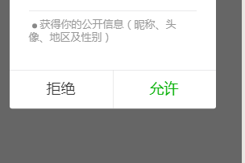
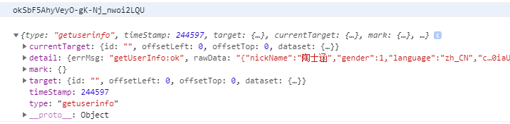

1.小程序js端调用框架登陆API，获取到一个临时code,拿着这个code去调用自己的服务端接口
2.在自己的服务器端，使用app_id app_secrect code可以获取到用户的openid，这个id是用户唯一的id并且不会改变,可以把这个id返回给小程序端
小程序端本地保存openid
3.获取用户信息很简单，并且不需要自己的服务器处理，只需要小程序端提供的API。
前端页面wxml使用一个按钮，按钮里增加几个属性，就可以回调到小程序js部分的方法上，并且带着用户的个人信息，如昵称 头像等
4.这个时候就可以把该用户的openid 和 昵称，头像，一块调用自己服务端接口，保存到数据库中
index.js
const app = getApp()
Page({
data: {
openid:""
},
//按钮回调的方法
getPerson:function(e){
console.log(this.data.openid);
console.log(e);
},
onLoad: function () {
var self=this;
wx.login({
success(res) {
//js调用登陆命令获取到code
if (res.code) {
//通过code调用自己服务接口获取到openid
wx.request({
url: 'https://api.sopans.com/third/wxOpenId.php',
data: {
code: res.code
},
success:function(wxInfo){
console.log(wxInfo);
self.data.openid = wxInfo.data.openid
}
})
} else {
console.log('登录失败！' + res.errMsg)
}
}
})
},
})index.wxml
<button open-type="getUserInfo" bindgetuserinfo="getPerson">获取用户信息</button> $appid = ''; // 小程序APPID
$secret = ''; // 小程序secret
$code=$_GET['code'];
$url = 'https://api.weixin.qq.com/sns/jscode2session?appid=' . $appid . '&secret='.$secret.'&js_code='.$code.'&grant_type=authorization_code';
$curl = curl_init();
curl_setopt($curl, CURLOPT_RETURNTRANSFER, true);
curl_setopt($curl, CURLOPT_TIMEOUT, 500);
curl_setopt($curl, CURLOPT_SSL_VERIFYPEER, false);
curl_setopt($curl, CURLOPT_SSL_VERIFYHOST, false);
curl_setopt($curl, CURLOPT_URL, $url);
$res = curl_exec($curl);
curl_close($curl);
echo $res; // 这里是获取到的信息
